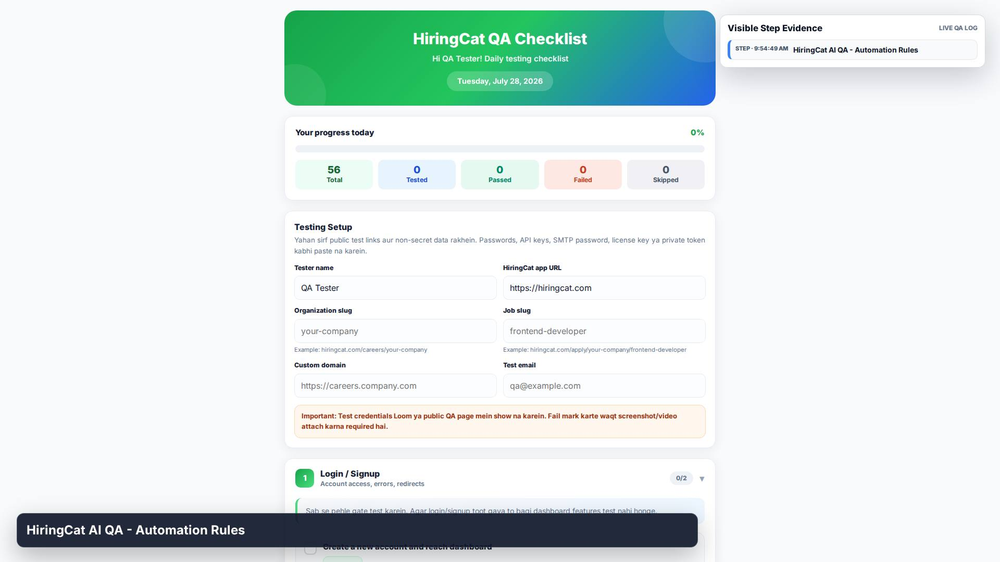
1. STEP
HiringCat AI QA - Automation Rules

HiringCat AI QA - Automation Rules
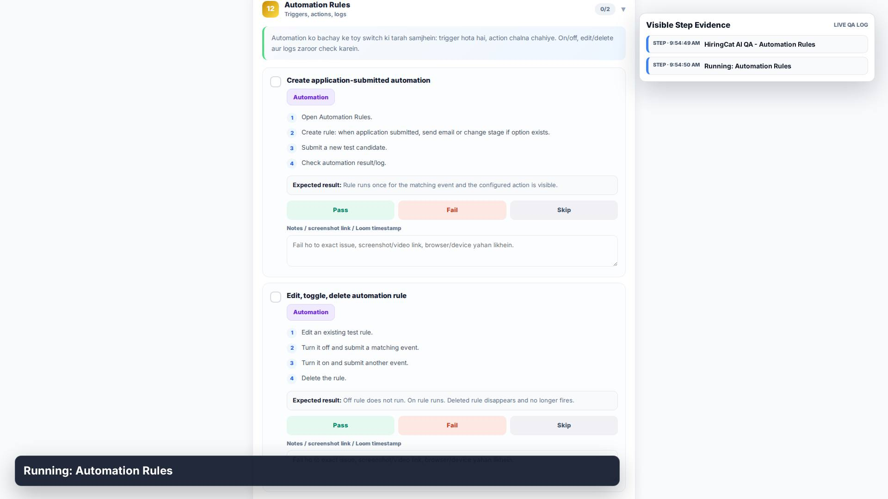
Running: Automation Rules
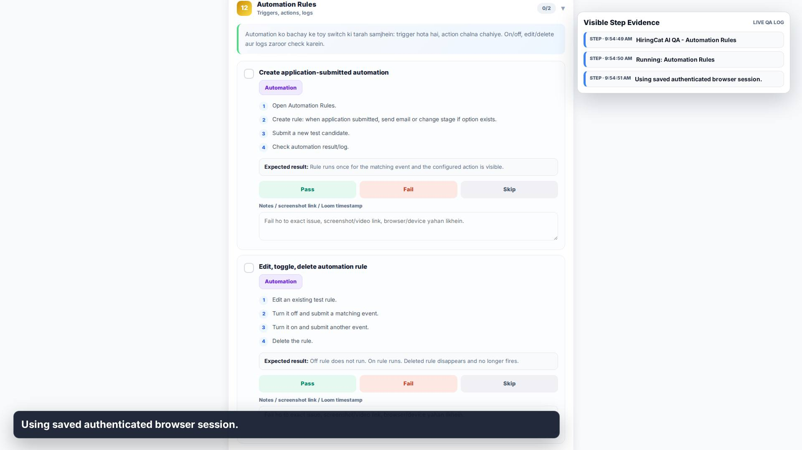
Using saved authenticated browser session.
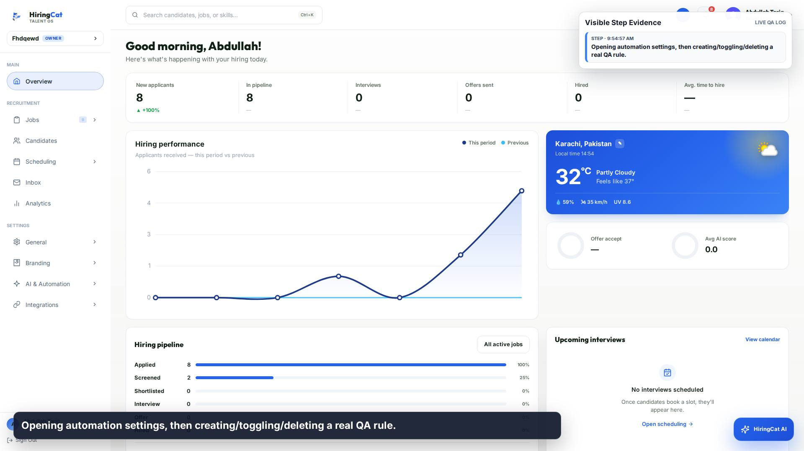
Opening automation settings, then creating/toggling/deleting a real QA rule.
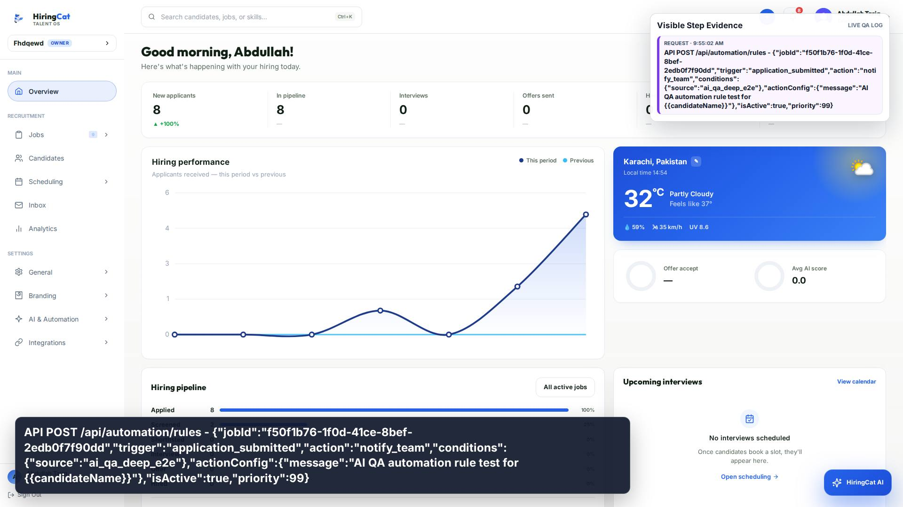
API POST /api/automation/rules - {"jobId":"f50f1b76-1f0d-41ce-8bef-2edb0f7f90dd","trigger":"application_submitted","action":"notify_team","conditions":{"source":"ai_qa_deep_e2e"},"actionConfig":{"message":"AI QA automation rule test for {{candidateName}}"},"isActive":true,"priority":99}
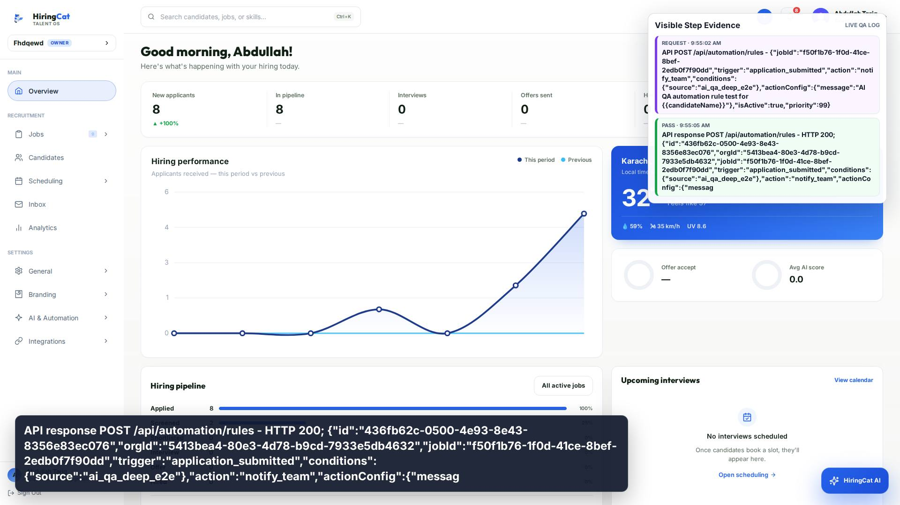
API response POST /api/automation/rules - HTTP 200; {"id":"436fb62c-0500-4e93-8e43-8356e83ec076","orgId":"5413bea4-80e3-4d78-b9cd-7933e5db4632","jobId":"f50f1b76-1f0d-41ce-8bef-2edb0f7f90dd","trigger":"application_submitted","conditions":{"source":"ai_qa_deep_e2e"},"action":"notify_team","actionConfig":{"messag
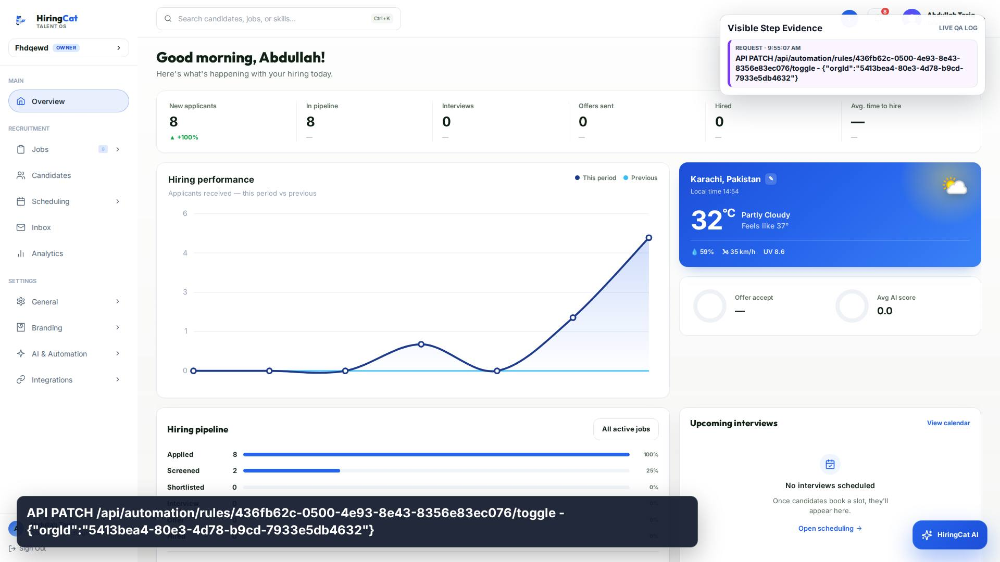
API PATCH /api/automation/rules/436fb62c-0500-4e93-8e43-8356e83ec076/toggle - {"orgId":"5413bea4-80e3-4d78-b9cd-7933e5db4632"}
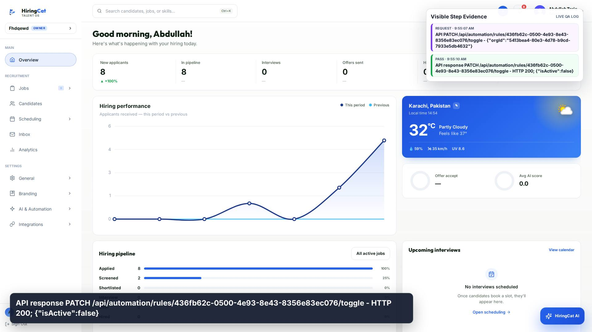
API response PATCH /api/automation/rules/436fb62c-0500-4e93-8e43-8356e83ec076/toggle - HTTP 200; {"isActive":false}
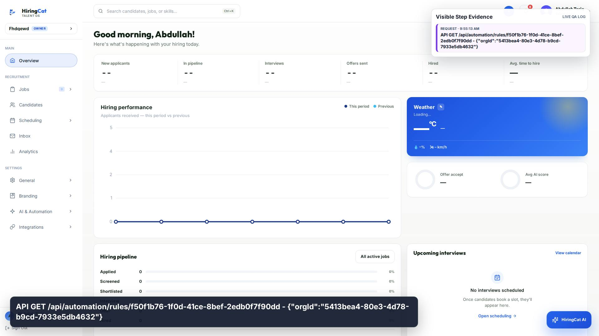
API GET /api/automation/rules/f50f1b76-1f0d-41ce-8bef-2edb0f7f90dd - {"orgId":"5413bea4-80e3-4d78-b9cd-7933e5db4632"}
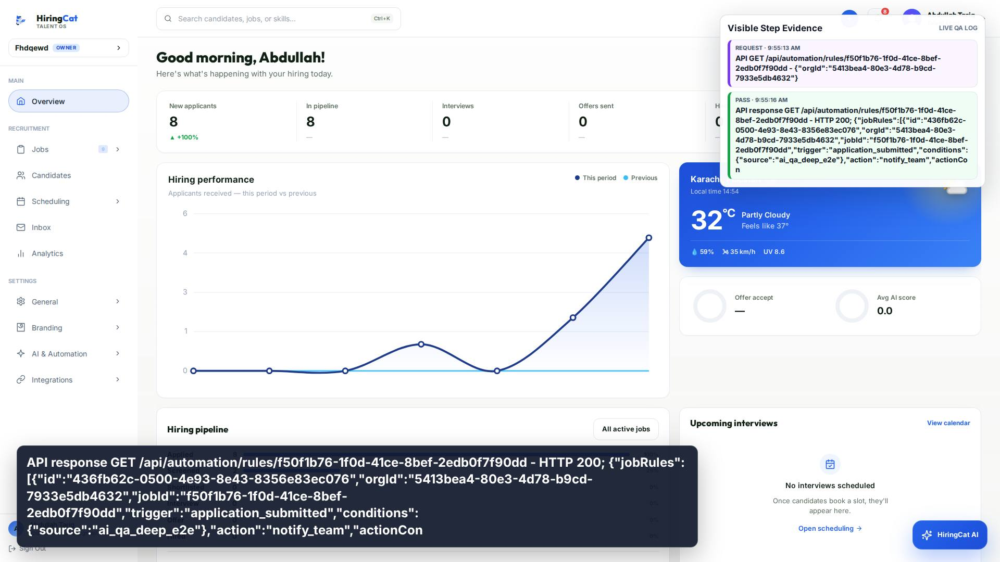
API response GET /api/automation/rules/f50f1b76-1f0d-41ce-8bef-2edb0f7f90dd - HTTP 200; {"jobRules":[{"id":"436fb62c-0500-4e93-8e43-8356e83ec076","orgId":"5413bea4-80e3-4d78-b9cd-7933e5db4632","jobId":"f50f1b76-1f0d-41ce-8bef-2edb0f7f90dd","trigger":"application_submitted","conditions":{"source":"ai_qa_deep_e2e"},"action":"notify_team","actionCon
API DELETE /api/automation/rules/436fb62c-0500-4e93-8e43-8356e83ec076 - {"orgId":"5413bea4-80e3-4d78-b9cd-7933e5db4632"}
API response DELETE /api/automation/rules/436fb62c-0500-4e93-8e43-8356e83ec076 - HTTP 200; {"success":true}
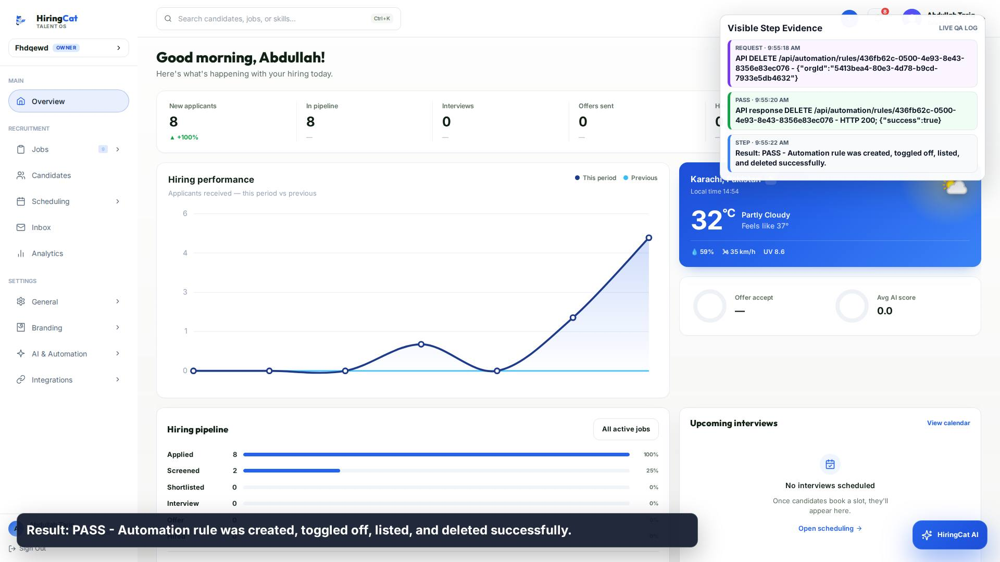
Result: PASS - Automation rule was created, toggled off, listed, and deleted successfully.